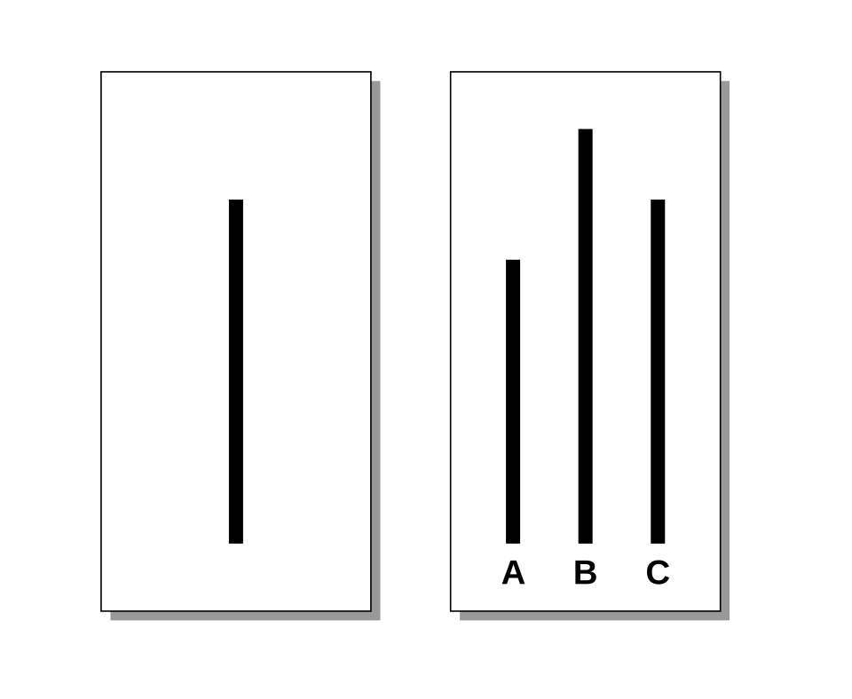

The Big Picture: The Power of the Situation
Do you act differently when you are hanging out with your friends compared to when you are sitting in a silent classroom? Of course you do! Social norms define expectations and roles a society may have for its members in individual and social situations. In this massive topic, we dive deep into the psychology of social situations, exploring conformity, group dynamics, persuasion, and the famous (and sometimes infamous) experiments that revealed just how powerful social pressure can be.
1.Social Influence: Conformity and Obedience
The Power of Roles
Before we even get to persuasion or peer pressure, the social situation itself can shape behavior through the roles it hands us. A role is a set of expectations about how people in a specific social position should behave, and when we step into a new role, we often adopt its attitudes surprisingly fast.
The most famous (and highly controversial) demonstration of this was Philip Zimbardo's Stanford Prison Experiment. College students randomly assigned to be "guards" or "prisoners" quickly adopted the aggressive or submissive attitudes expected of those roles, taking the simulation so seriously that the experiment had to be shut down early. It revealed a striking truth: the social situation, not just personality, can override how we normally behave.
![A grainy, candid black and white historical photograph from the 1971 Stanford Prison Experiment. The scene captures a narrow, dimly lit basement hallway converted into a makeshift 'prison.' Several young men, identified as prisoners by their white gowns and numbers, are huddled together on a low cot inside one of the 'cells,' their heads bowed. A guard, wearing a dark khaki uniform, a hat, and reflective aviator sunglasses, stands authoritatively in the foreground corridor over them, holding a wooden nightstick and pointing. The walls are concrete block with hand-painted numbers and bars on small window openings.](../images/stanfordprison.jpg)
Social influence theory proposes that social pressure to behave or think in certain ways can be normative or informational. Depending on the situation, we bend to the group for different reasons:
- Normative Social Influence
- The tendency to conform in order to be liked, accepted, or approved of by others, even if we do not privately agree with the group. Example: You secretly hate the taste of iced coffee, but you order it anyway because all your friends are drinking it.
- Informational Social Influence
- The tendency to conform because we believe others have accurate information, especially in ambiguous or uncertain situations. Example: You travel to a foreign country and are unsure how to use the subway system, so you closely copy the behavior of the locals.
Famous Conformity & Obedience Research
Research on conformity clarifies the conditions that strengthen the likelihood of people adhering to unspoken rules, norms, or expectations. The most famous demonstration of this is Solomon Asch's Line Experiment, where participants routinely agreed with a group's obviously incorrect answer about the length of drawn lines just to avoid standing out.
When the pressure comes from the top down, we look at obedience: a form of social influence in which individuals follow direct commands or orders from an authority figure. Research on obedience clarifies the conditions that strengthen the likelihood of people complying with the directives of an authority figure. Stanley Milgram's Shock Experiment is the cornerstone study here. Participants believed they were administering painful electric shocks to a learner just because an experimenter in a lab coat told them to continue. This study revealed shocking truths about human nature, but also led to strict modern ethical guidelines in psychological research due to the severe psychological distress it caused the participants.

2.Persuasion Techniques
Persuasion refers to the techniques applied to convince the self or others of particular ideas, actions, or beliefs. Persuasion can depend on the route to persuasion. The elaboration likelihood model outlines two main routes to persuasion: central and peripheral.
- Central Route to Persuasion
- People carefully analyze and think about the quality of the arguments being presented. Example: Buying a car based on its safety ratings and fuel efficiency.
- Peripheral Route to Persuasion
- People are influenced by superficial cues such as attractiveness, emotion, or credibility of the source. Example: Buying a car because a famous celebrity was driving it in a catchy commercial. The halo effect (where an overall positive impression of a person influences perceptions of their other traits) is a prime example of a peripheral route to persuasion.
Additionally, persuasion can depend on how information is presented, as demonstrated by two classic techniques:
- Foot-in-the-Door Technique
- Agreeing to a small request makes someone more likely to agree to a larger related request later. Example: Asking to borrow $5, then later asking to borrow $50.
- Door-in-the-Face Technique
- Making a massive, unreasonable request that gets rejected, followed by a smaller, more reasonable request. Example: Asking your parents for a brand new car, and when they say no, asking if you can at least borrow theirs for the weekend.
3.Group Dynamics and Behavior
Being a member of a group can profoundly influence how one behaves or experiences mental processes. Here is how the presence of others changes our cognitive wiring:
- Social Facilitation vs. Social Inhibition
- Performing a mental or physical behavior in front of a group can lead to social facilitation. This means you perform better on simple or well-practiced tasks when others are present. Conversely, social inhibition means performing worse on difficult or unpracticed tasks under a crowd's gaze.
- Social Loafing
- The tendency for individuals to put in less effort when working in a group compared to when working alone. Example: Coasting through a group project because you know your partners will do the heavy lifting.
- Deindividuation
- A state in which individuals lose self-awareness and personal accountability in a group, making them more likely to act in ways they normally would not (often seen in riots or online anonymity).
- Group Polarization
- The tendency for group discussion to strengthen the initial attitudes of group members, leading them to make more extreme decisions.
- Groupthink
- A phenomenon in which a desire for group harmony leads members to suppress dissenting opinions and make flawed or irrational decisions.
![A modern educational infographic titled 'UNDERSTANDING GROUP DYNAMICS: HOW GROUPS INFLUENCE BEHAVIOR'. The illustration features several clear panels connected by lines. The top-left panel, 'DEINDIVIDUATION,' shows a stylized crowd with uniform faces or masks engaged in unusual behavior like shouting, contrasted with an outline of a single individual face, with text about loss of self-awareness. The top-right panel, 'GROUPTHINK,' illustrates people around a table all agreeing quickly, ignoring dissenting silhouetted voices outside, with text about consensus-driven dysfunctional decision-making. The bottom-left panel, 'SOCIAL FACILITATION/LOAFING,' has two sub-panels: 'FACILITATION' showing someone running faster with an audience, and 'LOAFING' showing people barely pulling a rope in a group. The bottom-right panel, 'CONFORMITY,' shows a line of people pointing and looking in one direction, copying the leader even if wrong. A large central illustration shows a diverse circle of individuals.](../images/groupdynamics.png)
Our cultural background also shapes our group behavior. Cultural phenomena such as individualism (focusing on personal goals), collectivism (focusing on group harmony), and multiculturalism can influence how one perceives and behaves towards oneself and others.
Conflict and Cooperation
People often overestimate the levels to which others agree with them, known as the false consensus effect. This can lead to conflict. Social traps occur when individuals do not unite and act in their own self-interest to the detriment of the group. However, harmony can be restored. Superordinate goals serve to unite disparate groups under a common goal and help reduce negative affect and stereotyping among groups. Muzafer Sherif proved this in his famous Robbers Cave Experiment, where two rival groups of boys only set aside their intense hatred for one another when they had to work together to fix the camp's water supply.
Curious about how this applies to the real world? Industrial-organizational (I/O) psychologists study how people perform in the workplace. They study best practices in management of work, relationships among people working together, and how people feel about work (such as burnout).
4.Prosocial Behavior and The Bystander Effect
Why do we help others? Prosocial behavior involves voluntary actions intended to benefit others. Altruism refers to truly selfless behavior, but some researchers suggest that people act in prosocial ways due to incurring social debt. For instance, the social reciprocity norm (the expectation to return a favor) and the social responsibility norm (the expectation to help those in need) explain this type of behavior.
However, we do not always help. The tragic case of Kitty Genovese inspired researchers Latané and Darley to study the bystander effect. The bystander effect demonstrates that situational and attentional variables predict whether someone is likely to help another person. The primary cause is the diffusion of responsibility: the tendency for individuals to feel less personally responsible for taking action when other people are present.
5.Don't Trip Up! (Common Misconceptions)
⚠️ Conformity vs. Obedience: Conformity involves changing behavior to fit in with peers or a group. Obedience involves changing behavior in response to a direct command from an authority figure. If a teacher tells you to be quiet, that is obedience. If you become quiet because the rest of the class is quiet, that is conformity.
⚠️ Group Polarization vs. Groupthink: Group polarization is about the strengthening of an attitude (the group gets more extreme in their views after talking). Groupthink is about a flawed decision-making process where people stop raising objections just to keep the group happy and conflict-free.
6.Key Terms in This Topic
7.Practice This Topic
Test yourself on exactly what you just read. The numbers on each button show how much material is waiting for you.
The same self-check questions that close your guided notes. Find out whether social influence, group dynamics, and the bystander effect stuck.
Start Quick Check →Flip through the key terms from this topic, including conformity, obedience, groupthink, and the bystander effect.
Open the deck →AP-style multiple choice on conformity, persuasion, group behavior, and prosocial behavior, with an explanation after every answer.
Take the quiz →